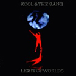
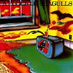
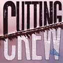
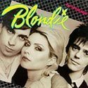

Well, as Jezz Torrent once said, music is the food of love, or in my case a massively under-valued career as a record plugger. The 80s was the best period ever for music, at least in my life. I loved it. Great records. Hot girls. Me on every guest list from here to somewhere else (well, not from here, I wasn't in a frigging halfway house, and I can assure you the parties in here are rubbish, unless you like discussing childhood traumas with pillocks on tranquilisers, but from, well, Kent to Vice City, like me) and so on and so forth. I had the time of my life back then. Music, nightclubs, girls, so many flipping girls. More girls than I could count if I could only count to five. But above all music and that's what this section is all about: music.
Well, not just any music, but my favourites, or as they say across the pond, favorites. Here's some of them.
|  | Kool and the Gang: "Summer Madness" What a record. What an intro. What a gang! Wonderful stuff. Reason I went into the music business, actually, and as a direct result, the reason the music business is where it is today. |
|
|  | Flock of Seagulls: "I Ran" And I tell you so did I, so far away, but that's another story and i can't be bothered to tell it. Flock of Seagulls were one of the first bands I took over to the States, when the new wave thing went really big. I never got the credit I deserved. |
|
 |
Judas Priest: "You Got Another Thing Coming" Rob and the boys knew a thing or two about rock music. People often used to say that to me as well, but they were usually wrong. A great track this one, and I was personally responsible for breaking Priest in America. |
|
|  | Cutting Crew: "I Just Died in your Arms Tonight" Well, thankfully, I didn't, but these guys did. You have to love the Cutting Crew. Great lads. Great music. A real tear jerker at the end of the disco. Another track that I discovered and helped to make huge around the world. Again, the cruel hand of fate meant I didn't get the recognition I deserved, but a magic record. |
|
|  | Blondie: "Atomic" Possibly my favourite ever record about nuclear war. I used to know a woman sounded just like that Blondie bird. |
|
Of course, I like a lot of other records, too. But I liked these ones a lot, probably more than most.